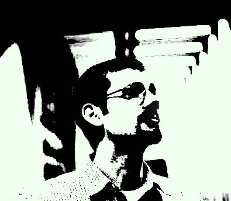

W e l c o m e
Thank you so much for visiting my personal webpage!
This site features both my current and completed web development projects. As a certified music nerd, you might find some tunes I've been working on too.
You can call me The Gallant Aardvark, or Overlord, but most people call me Justin.
As of this writing, I'm working my way through Codeup, a full-stack web engineering bootcamp based in San Antonio, TX. I'm learning the LAMP+J Stack (Linux, Apache, MySQL, PHP, and some Javascript). As a visual person, I've really enjoyed front-end and UI/UX web development, but I'm eager to start building back-end infrastructure as we shift toward PHP and MySQL later in the bootcamp.
The journey that lead to Codeup and a career in web developement has been a long one. With two degrees in Piano Performance and Pedagogy and eight years teaching piano in South Texas, I've spent most of my professional life building musicians. As I look ahead toward my future in web engineering, I'm reminded of the passion early in my music career as a performer for building and crafting experiences. As web developers, we have the opportunity to influence and code experiences for the people who use and explore the technologies and services we build.
Maybe we can build something great together.
-Justin Reich